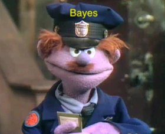

A Quick Note on Bayesian Methods
1 Introduction
These documents are meant to introduce you to the most basic elements of Bayesian inference. They are in no way comprehensive, but they will hopefully give you a platform of understanding so that you can dive deeper if you want.
Here are a few references that you may find useful:
2 Statistical Inference
Some people think a lot about the philosophy of “statistical inference.” I don’t.
Here are two definitions that keep it simple but sum it up pretty well:
- “Statistical inference is concerned with drawing conclusions, from numerical data, about quantities that are not observed.” (Gelman et al. 2013, 4)
- “The process of drawing conclusions about the nature of some system on the basis of data subject to random variation.” (Upton and Cook 2014)
In practice for us as pharmacometricians, this means
- In any experiment, observational study, or clinical trial, we are using sample data to try to answer some question(s) about the population of interest.
- We collect (sample) data \(\left(Y\right)\) to estimate parameters \(\left(\theta\right)\) and summarize our uncertainty in those estimates to say something/make decisions about the “population.”
- These estimates can be either quantities that are not observable (e.g. the effect of poor kidney function on drug clearance) or quantities that are potentially observable (e.g. drug concentration for potential future patients with a range of kidney function).
- However, learning from the data is complicated by the natural variability of the measurements, so we can’t find the “correct” values of the parameters.
- We want to quantify our knowledge/uncertainty with point estimates, i.e., “typical” values, and uncertainty estimates such as standard errors, CV%, confidence/credible intervals, and prediction intervals.
2.1 Bayesian Inference vs. Classical Inference
There is a long-standing debateabout Bayesian vs. Classical viewpoints on inference. I don’t get into that here. There’s plenty out there if you want to find material that argues one in favor of the other.
Here are some things that typically characterize the differences between Bayesian inference and classical inference1:
| Bayesian | Classical | |
|---|---|---|
| Data | Fixed | Random |
| Parameters | Random | Fixed |
| Inference | Directly on parameters | Indirectly on parameters through the sampling distribution of the data |
| Probability | Subjective (through priors) | Objective (no priors) |
| Uncertainty | Probability distributions - \(p(\theta|y)\) | Confidence intervals - \(p(y | \theta)\) |
But there can be some ambiguity here. One can argue that the constraint parameter that penalizes the size of regression coefficients in regularization methods like the LASSO and ridge regression (Hastie, Tibshirani, and Friedman 2009) incorporates prior information - each of their estimators can be interpreted as the posterior mode when the regression parameters have a certain prior distribution (Laplace for LASSO, Gaussian for ridge regression). Does that make LASSO and ridge regression Bayesian? Or if I provide an “objective noninformative prior”2, does that make my analysis non-Bayesian, even if I have a full posterior distribution? Are empirical Bayes estimates (EBEs) Bayesian if they don’t have a full posterior distribution?
I’m not the Bayes police, and I don’t think the terminology is all that important in the grand scheme of things, so I won’t answer those questions for everybody. But for all the content on this website, generally what I call “Bayesian” involves some amount of prior information \((none < some \leq a\;lot)\) and a full posterior distribution.

References
Footnotes
This table pulls heavily from slide 82 here. Thanks, Jose.↩︎
For now, disregard that no priors are truly noninformative. and that “noninformative” priors are often a bad idea.↩︎